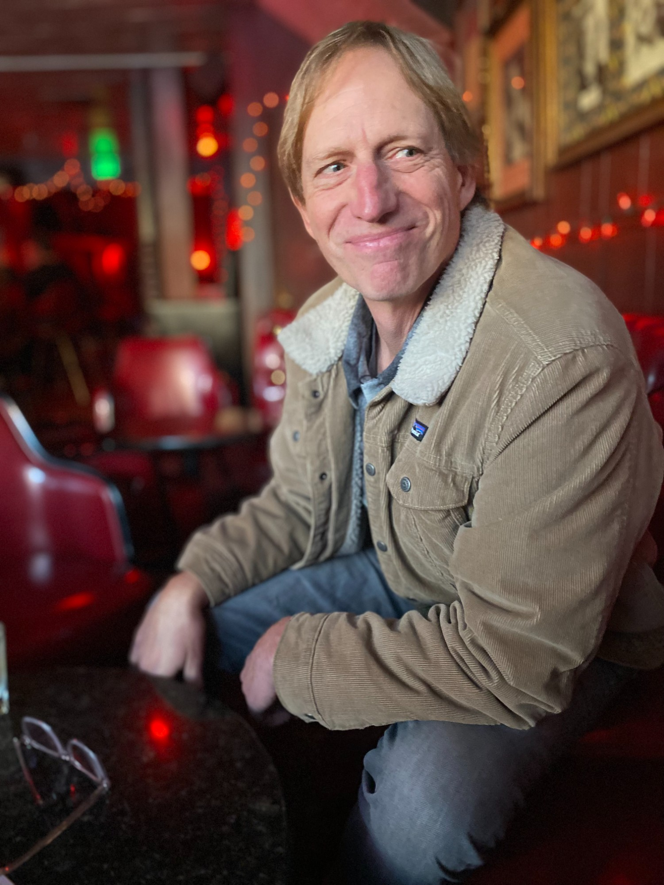

Operator. Advisor. Coach.
Director, Greenhouse @ Orrick Tech Studio · Palo Alto, CA
About
I started my career as a tech and media lawyer, but I was always drawn to the operating side of the business. After more than two decades as an executive at companies like Yahoo!, Demandforce, Intuit, Logikcull, and Zenoti — spanning roles as VP, CMO, and COO — I came back to the law firm world to build something different.
I was fortunate to be mentored by Bill Campbell, whose lessons about leadership, team-building, and the power of coaching shape how I work every day. My belief is simple: the best startup teams are the right kind of crazy, and their passion and belief is exhilarating.
Outside of work I spend time in nature, visiting galleries, and reading widely — fiction, nonfiction, and everything in between.
Current Work
Greenhouse
Orrick Tech Studio · Director
Greenhouse gives high-growth startups access to practical, affordable legal support from one of the world's leading tech law firms. We work with founders across all stages — from formation through fundraising, M&A, and IPO — with flat fees and a team that operates like an embedded partner, not outside counsel.
Career
Links
Loading…
Listening
Loading…